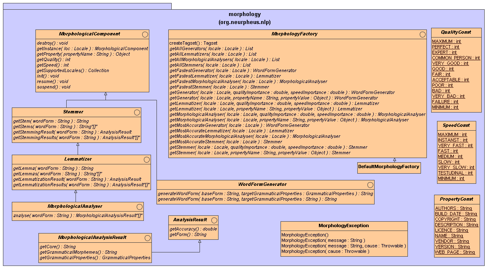

Major interfaces representing morphological components.
This package contains basic interfaces of the API.
All morphological components inherits from the generic {@link org.neurpheus.nlp.morphology.MorphologicalComponent}
interface. Each component implementing this interface is specified by its quality, speed, supported locales
and other properties. This interface contains also methods which initialized, destroys, suspends or resumes the component.
The API defines four basic morphological components:
- {@link org.neurpheus.nlp.morphology.Lemmatizer} - determines lemas of input forms.
- {@link org.neurpheus.nlp.morphology.Stemmer} - determines stems of input forms.
-
- {@link org.neurpheus.nlp.morphology.MorphologicalAnalyser} - performs full morphological analysis.
- {@link org.neurpheus.nlp.morphology.WordFormGenerator} - generates desired forms from input lema forms.
All morphological components can be constructed by a factory implementing
the {@link org.neurpheus.nlp.morphology.MorphologyFactory} interface. Basic implementation of this
interface - the {@link org.neurpheus.nlp.morphology.DefaultMorphologyFactory} - looks up for the morphological
components scanning the META-INF/services/FULL-INTERFACE-NAME resources where
the FULL-INTERFACE-NAME is the name of the interface of a morphological component
(for example org.neurpheus.nlp.morphology.Stemmer}. If you want add your own component
you should create similar file in your library and declare within the file the full name
of a class implementing the component.
The static method 'getInstance' returns an instance of the DefaultMorphologyFactory factory.
You can use this instance to get a component for a desired language calling for example
one of the following methods:
- {@link org.neurpheus.nlp.morphology.MorphologyFactory#getAllGenerators(Locale locale)}
- {@link org.neurpheus.nlp.morphology.MorphologyFactory#getAllLemmatizers(Locale locale)}
- {@link org.neurpheus.nlp.morphology.MorphologyFactory#getAllMorphologicalAnalysers(Locale locale)}
- {@link org.neurpheus.nlp.morphology.MorphologyFactory#getAllStemmers(Locale locale)}
- {@link org.neurpheus.nlp.morphology.MorphologyFactory#getFastestGenerator(Locale locale)}
- {@link org.neurpheus.nlp.morphology.MorphologyFactory#getFastestLemmatizer(Locale locale)}
- {@link org.neurpheus.nlp.morphology.MorphologyFactory#getFastestMorphologicalAnalyser(Locale locale)}
- {@link org.neurpheus.nlp.morphology.MorphologyFactory#getFastestStemmer(Locale locale)}
- {@link org.neurpheus.nlp.morphology.MorphologyFactory#getGenerator(Locale locale, String propertyName, Object propertyValue)}
- {@link org.neurpheus.nlp.morphology.MorphologyFactory#getGenerator(Locale locale, double qualityImportance, double speedImportance)}
- {@link org.neurpheus.nlp.morphology.MorphologyFactory#getLemmatizer(Locale locale, String propertyName, Object propertyValue)}
- {@link org.neurpheus.nlp.morphology.MorphologyFactory#getLemmatizer(Locale locale, double qualityImportance, double speedImportance)}
- {@link org.neurpheus.nlp.morphology.MorphologyFactory#getMorphologicalAnalyser(Locale locale, String propertyName, Object propertyValue)}
- {@link org.neurpheus.nlp.morphology.MorphologyFactory#getMorphologicalAnalyser(Locale locale, double qualityImportance, double speedImportance)}
- {@link org.neurpheus.nlp.morphology.MorphologyFactory#getMostAccurateGenerator(Locale locale)}
- {@link org.neurpheus.nlp.morphology.MorphologyFactory#getMostAccurateLemmatizer(Locale locale)}
- {@link org.neurpheus.nlp.morphology.MorphologyFactory#getMostAccurateMorphologicalAnalyser(Locale locale)}
- {@link org.neurpheus.nlp.morphology.MorphologyFactory#getMostAccurateStemmer(Locale locale)}
- {@link org.neurpheus.nlp.morphology.MorphologyFactory#getStemmer(Locale locale, String propertyName, Object propertyValue)}
- {@link org.neurpheus.nlp.morphology.MorphologyFactory#getStemmer(Locale locale, double qualityImportance, double speedImportance)}
The following diagram illustrates inheritance between basic interfaces of the components.
As you can see, the lemmatizer inherites from the stemmer and the morphological analyser inherits
from the lemmatizer. This inheritance takes place because it is easy to construct a stemmer
from a lemmatizer and the lemmatizer from a morphological analyser.
If you want to implement your own components you can base on abstract implementations
of these components defined in the org.neurpheus.nlp.morpholoogy.baseimpl package.
The abstract components provided by this package implementat almost all methods of the interfaces.
If you will use these abstractions you will concentrate only on the most important
methods which perform an analysis. More over, when you will implement morphological analyser,
you will have already implemented methods for the stemmer and lemmatizer interfaces.

Copyright © 2006-2008 Jakub Strychowski,
NeurPheus (
neurpheus.org)

 This library is free software; you can redistribute it and/or modify it
under the terms of the GNU Lesser General Public License as published by the Free
Software Foundation; either version 3 of the License, or (at your option)
any later version.
This library is distributed in the hope that it will be useful, but
WITHOUT ANY WARRANTY; without even the implied warranty of MERCHANTABILITY
or FITNESS FOR A PARTICULAR PURPOSE. See the GNU Lesser General Public License
for more details.
You should have received a copy of the GNU Lesser General Public License
along with this program; if not, write to the Free Software
Foundation, Inc., 59 Temple Place - Suite 330, Boston, MA 02111-1307, USA.
This library is free software; you can redistribute it and/or modify it
under the terms of the GNU Lesser General Public License as published by the Free
Software Foundation; either version 3 of the License, or (at your option)
any later version.
This library is distributed in the hope that it will be useful, but
WITHOUT ANY WARRANTY; without even the implied warranty of MERCHANTABILITY
or FITNESS FOR A PARTICULAR PURPOSE. See the GNU Lesser General Public License
for more details.
You should have received a copy of the GNU Lesser General Public License
along with this program; if not, write to the Free Software
Foundation, Inc., 59 Temple Place - Suite 330, Boston, MA 02111-1307, USA.